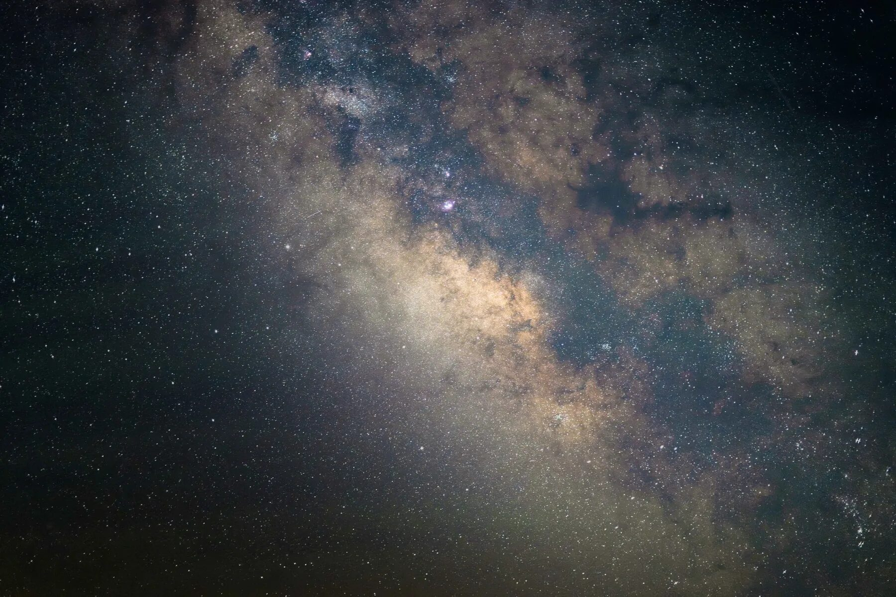
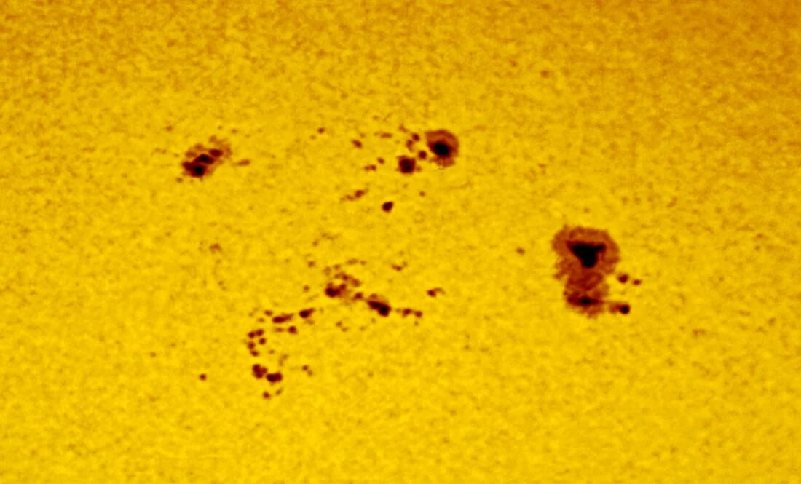
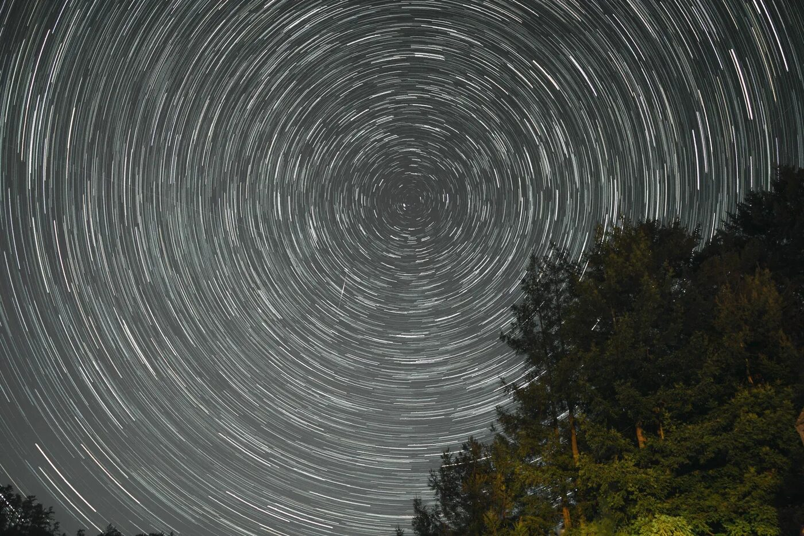
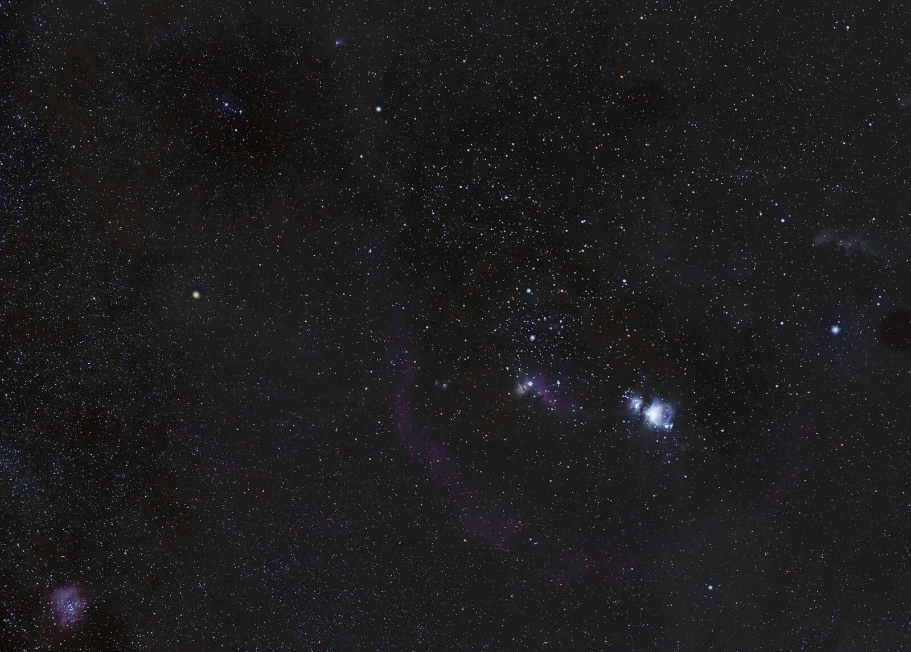

Engineering & photography
Brian
Feuerman.
Aerospace Engineering student
and photographer.
Photography by Brian Feuerman
Selected work
Photographs.
A selection of my photographs.
Click a photograph to explore








Hi, I’m Brian.
A little about me
About me.
I’m an Aerospace Engineering student with an interest in photography, engineering projects, and the night sky.
In my spare time, you’ll find me editing photos, working on projects, or outside admiring the stars.
Experience, projects & skillsView résumé (PDF, opens in a new tab)Contact